Duolatera
An online VR 2-players co-op puzzle game.
Overview
This is an online VR 2-players co-op puzzle game. In this game, 2 players will connect through their Steam accounts and work together to solve a series of puzzles in a VR environment. Players will traverse through the overworld and the underworld using laser triggered portals and find their way back to earth by interacting with various devices.
My Role
Creative Lead | Level Design
The game currently has a tutorial level and three acts. I am responsible for the tutorial, Act 1, and Act 2.
Here is the gameplay video for Act 1-3. ↓
Duration
6 months, 2024.8 - now
Team Size
5
Tools and Environment
Unreal Engine 5, C++
Award
Mechanics
Mirrored world and Portal
Overworld and Underworld are the core mechanics of this puzzle game. The two worlds can be understood as distinct areas with similar architectural structures. Props used for puzzles will be located in different areas of the Overworld and Underworld, and players will need to explore both worlds to solve the puzzles.
Partol will serve as the tool connecting the Overworld and Underworld. Players can use their laser tool to draw a circle on the Portal Canvas to activate a portal when it is in the off state. Throughout the level, there will only be one active portal at a time. When a player activates another portal, the previously active portal will automatically close.
Additionally,when players are in the Underworld, their laser tool will be disabled, and they will be unable to shoot lasers.

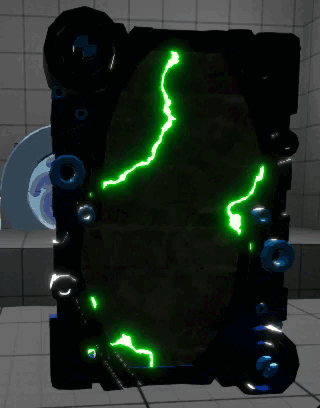
Partner Button
Button, as a basic prop in the game, requires players to interact with the top sphere of the button using their VR hands. Through the collision box interaction, the animation of the sphere will show it being pressed down.
Partner button refers to a mechanism in the game where both players need to activate their respective buttons simultaneously to activate the game objectives connected to the partner button. Once the partner button is activated, it will remain in an active state, allowing players to move their hands and continue exploring the surroundings.
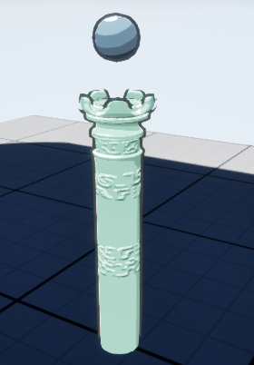
 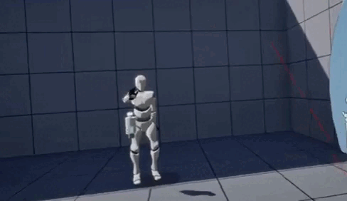
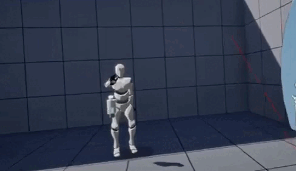
Ring Sensor
Ring sensor is a virtual alien interaction device in our game. Players need to place their VR hands into the center of the device to activate the objects connected to the ring sensor.
If the player's hand moves beyond a certain range, the ring sensor will be deactivated, and the linked objects will also be deactivated. Therefore, to maintain the activation state, players must stay in place and keep their hand in position.
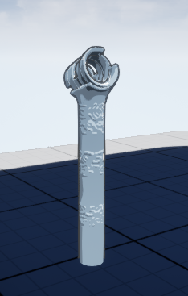
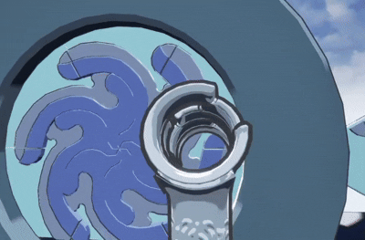
Symbols
Symbols appear in pairs in the game. Players are required to shoot at two symbols with the same glyph.
State represents the current interaction form of the symbol, with a total of five states.
In the first two states,"inactive" and "lit", the laser fired by the laser tool has no effect. The difference between these states is that when in the inactive state, the glyph on the symbol is invisible, while in the lit state, the glyph is visible.
When in the activatable state, the laser fired by the laser tool will activate the symbol if it is shot for 3 seconds.
When in the active state, this means the symbol has been successfully shot, but it must wait for the corresponding symbol to also be activated. If the player stops shooting, the symbol will return to the activatable state.
Only when both players have shot and maintained the active state of their corresponding symbols will the pair of symbols reach the activated state.
The single symbol only exists in the tutorial level,so single button will jump through the state of active.
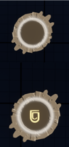
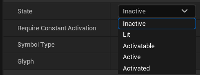
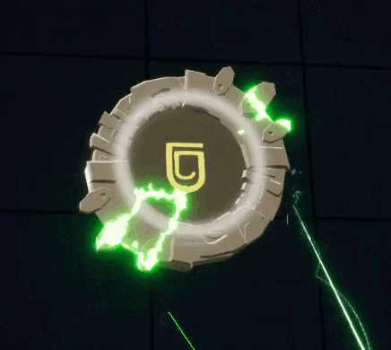
Level
Single-player tutorial level
Goal of Tutorial
To ensure that players, even those with no prior VR gaming experience or unfamiliar with using VR controllers, can successfully play our game, the game starts with a tutorial level.
Teleportation and Snapturn
A corner has been designed as the starting point,where players can learn how to teleport andsnap-turn. Once players master these two actions, they can move past this corner.
VR hands
Our game requires players to use their VR hands to interact with in-game props. So, when players figure out that they don’t need to press buttons, but instead need to physically interact with objects, they can proceed further.
Practice
In this room, players will continue to practice their teleporting, snap-turning, and interaction skills. After interacting with certain items, they will receive their laser tool holster and laser tool. This section will guide them in learning how to grab and interact with objects.
Shooting with laser tool
The game requires players to shoot a prop or symbols within the game to complete the tutorial. In this step, players will learn how to activate a single symbol.


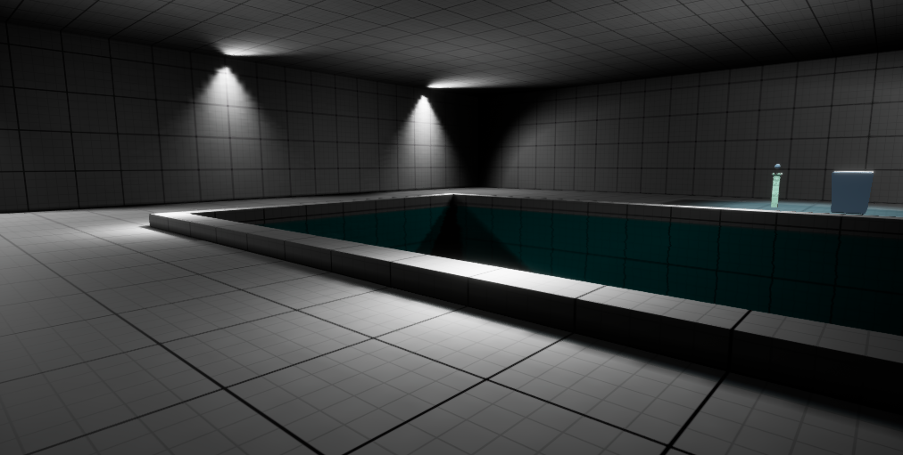
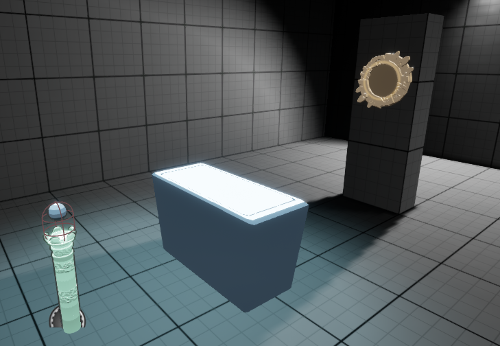
Act1
Goal of Act1
Act 1 is focused on familiarizing players with the functions of these props, with a relatively low difficulty level. The props will be introduced one at a time, ensuring that players aren’t overwhelmed with too much information and can easily grasp the core mechanics of the game.
Introducing the Overworld and Underworld
The concepts of the Overworld and Underworld will be introduced for the first time, and players will learn how to utilize the properties and mechanics of portals to solve puzzles. They will master how to shoot and open portals from a distance, as well as how to use an active portal to direct laser beams and interact with objects in the Underworld.
Introducing props
Additionally, players will be introduced to interacting with various props, such as the partner button, ring sensor, and symbols.
Example
Many of the puzzles here involve observing the differences between the two worlds. For example, in the Overworld, a door will close when a ring sensor is activated, while in the Underworld, the same door will open. Or, a pair of partner buttons are placed in different worlds, requiring players to separate and press the buttons simultaneously in order to solve the puzzle.
 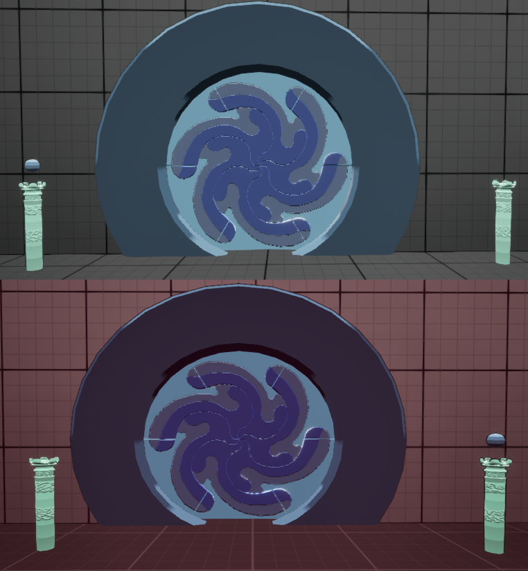
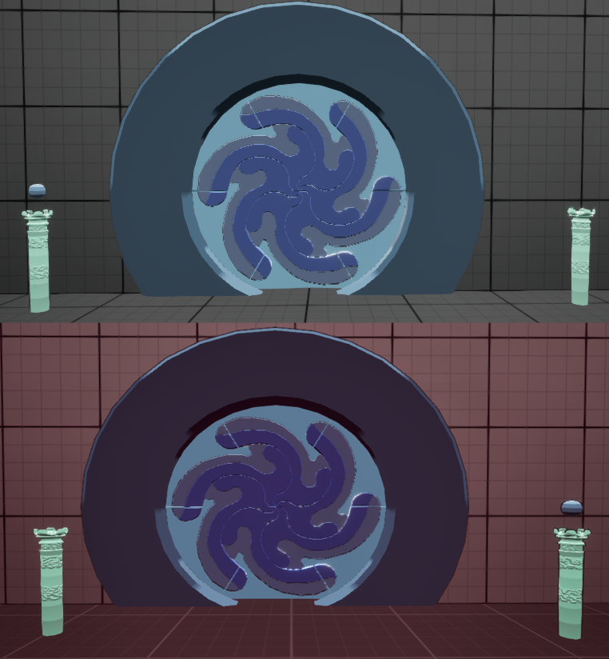
 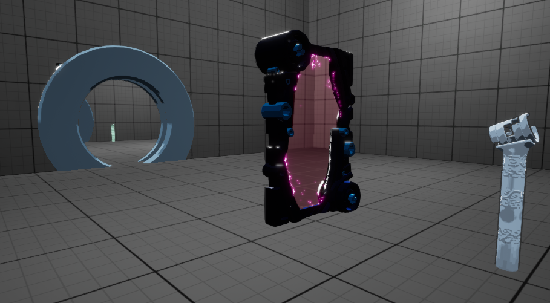
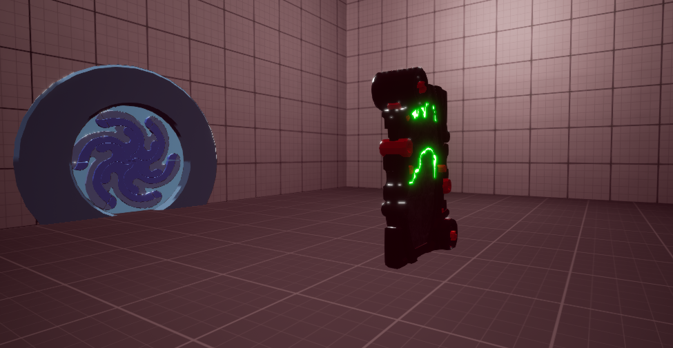
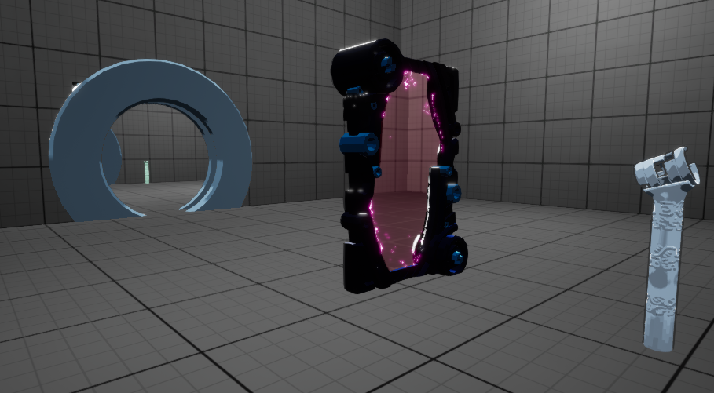
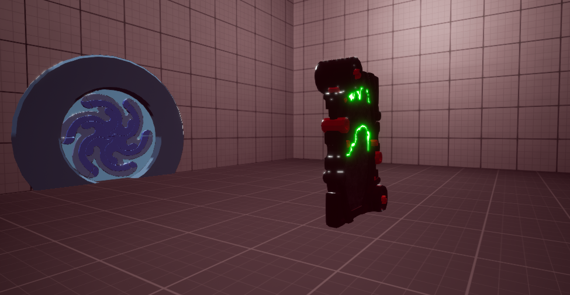
Act2
Goal of Act2
In Act 2, players will deepen their understanding of props and encounter variations in the basic usage of these props. The puzzle difficulty will gradually rise across phases 1 to 3. Our goal is for players to constantly face new puzzle difficulties, experiencing a sense of accomplishment and progress without becoming bored.
Combination experience in Act1
In this level, Symbols will gain the "grabbable" property, transforming into Grabbable Symbols. Players will need to combine their previous experience from Act 1 to make guesses and attempts at solving puzzles.
Glyphs
A variety of new glyphs will be introduced, enhancing players' understanding of the concept of "sets of symbols."In Act 1, the players are only presented with a pair of symbols, which means that although they previously encountered a pair of symbols with the same glyph, the glyph itself wasn't emphasized or required for the player to focus on. This will be addressed in Act 2, where players will face symbols with four different glyphs at once.
Memory-based puzzle
Memory-based puzzles will be introduced in Act 2, primarily in conjunction with glyphs. While memory will play a role, it will not be the primary focus of the game. In puzzles that require memorization, the content to be remembered will only refresh when the player enters a new phase, rather than resetting every time they fail.
 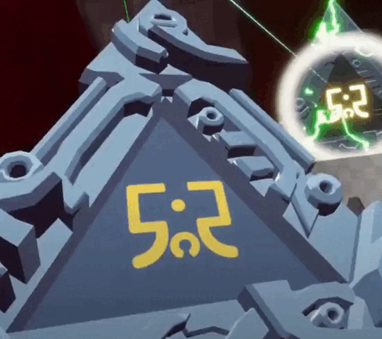
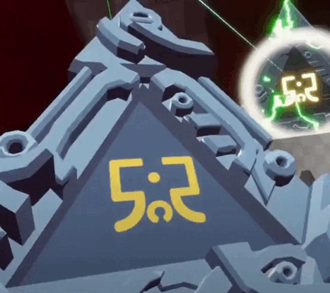
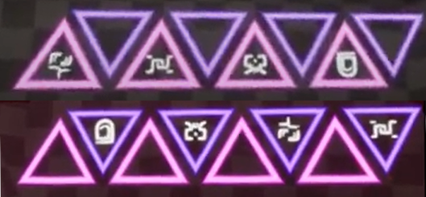